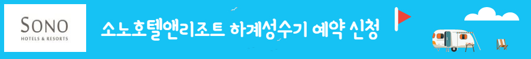

신협 소노호텔앤리조트(구, 대명)하계 성수기 확보된 객실(100객실에 187박)에 대하여 아래와 같이 배정해 드리고자 하오니
이용하실 조합원께서는 신청해 주시기 바랍니다.
✔️ 신청기간: 2022.6.14(화)~19(일)
✔️ 신청방법: 온라인 신청(신협특판몰)(회원로그인 또는 비회원으로 신청가능)
☞예약절차: 리조트선택 >> 필수옵션(타입및사용일자) >> 약관동의 >> "0"원결제(구매)하기
✔️ 추첨및배정일: 6.20(월)
=> 6.20(월) 추첨 후 잔여객실은 선착순 배정
✔️ 조합원당 전체객실 중 1개만 신청 가능합니다
* 2곳 이상 신청하신 경우 접수번호 빠른것으로 접수되오니 참고 바랍니다.
🎁 배정안내: 당첨(확정)된 객실에 대하여 개별 예약문자(알림톡)개별 발송 예정
☎️ 문의: 신협 원내 4939 📞 전화걸기
☞ 예약 신청: 신협특판몰에서
리조트(호텔) 및 이용일자를 선택하시어 신청(구매)하시면 됩니다.
☞아울러, 소노호텔앤리조트 잔여객실 또는 비성수기 평일(주말공휴일은 년간 사용 가능일수 소진으로 예약 불가) 실시간예약은 아래 "실시간 예약안내"를 참고해 주세요.